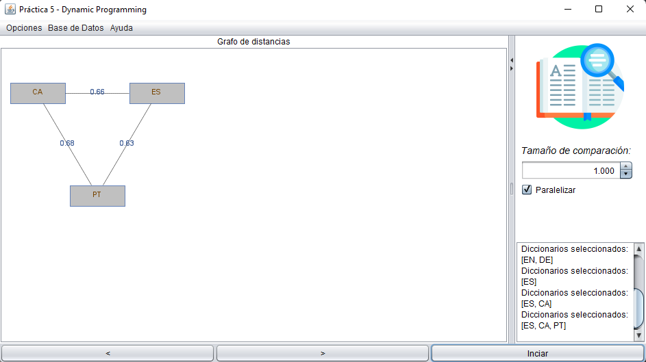

Para el correcto uso de la aplicación, el conjunto de acciones que se pueden realizar en dicho programa serán definidas a continuación. También, la distribución de las secciones de la interfaz junto a su explicación y funcionalidad.
Cuando se ejecute el programa por primera vez en la pantalla se debe mostrar la siguiente interfaz de usuario:

El menú de la aplicación consiste en la barra que se sitúa debajo del marco superior de la ventana. En esta se puede encontrar un conjunto de opciones para que el usuario pueda interactuar con la aplicación, modificar y analizar el comportamiento de esta. En concreto, se encuentran las opciones de "Opciones", "Base de Datos" y "Ayuda".
En la primera se sitúan las acciones para salir del programa, resetear datos, una funcionalidad que hemos añadido llamada "Adivinador de palabras" e iniciar las ventanas de estadísticas.
En la segunda opción llamada "Base de Datos" encontramos dos acciones que el usuario puede realizar, la primera, cargar una base de datos en caso de que quiera cambiar los idiomas, la segunda opción devuelve los idiomas cargados en la base de datos.
En la tercera opción se encuentra un menú desplegable con un manual de usuario con la explicación del funcionamiento de la aplicación.
El "Main" es el bloque principal de la vista, donde se representará el mapa con las poblaciones, aquí el usuario podrá seleccionar los puntos/poblaciones para encontrar el camino mínimo. El usuario deberá clicar de manera precisa en el punto, debido a que éste tiene un radio de detección del ratón determinado. De esta manera, al clicar en el mapa, no se seleccionará ningún punto de manera errónea. No podrá clicar dos veces sobre el mismo punto.
El "Sidebar" contiene un conjunto de opciones para modificar los datos y el modo de ejecución de la aplicación. A continuación, se explicará cada una de estas opciones y su función.
En primer lugar, se encuentra la opción para seleccionar el "Tamaño de comparación". En esta, se puede escoger el número de palabras a comparar de cada diccionario para ejecutar el algoritmo.
Debajo de este, se encuentra un checkbox para marcar la opción de paralelizar el algoritmo o hacerlo secuencial.
En tercer lugar, se encuentra una ventana de "logs". En esta ventana el usuario tendrá una noción de lo que está ocurriendo en el programa, indicando los diccionarios seleccionados.
En la sección "Footer", se hallan tres botones para interactuar con la interfaz para poder desplazarnos entre las diferentes pantallas. Además, hay un botón "Iniciar" para ejecutar el algoritmo.
En la izquierda, hay unos botones que permitirán al usuario poder moverse por las pantallas una vez se haya ejecutado el algoritmo, en caso contrario no se podrán utilizar.
En el lado derecho, tenemos el botón "Iniciar" el cual ejecutará el algoritmo después de haber seleccionado como mínimo dos idiomas.
Al iniciar la aplicación se mostrará una interfaz como la expuesta en la imagen User interface. Para poder iniciar la ejecución del algoritmo, es necesario seleccionar dos o más diccionarios, en el caso de equivocarse de idioma y querer seleccionar otro, bastará con volver a clicar sobre el diccionario. Además, tiene la opción de reiniciar todo en el menú de arriba. Una vez seleccionados los idiomas, al clicar en "Iniciar", se ejecutará el algoritmo y a continuación se mostrarán una serie de pantallas por las que el usuario podrá navegar con los botones inferiores. A continuación, la siguiente imagen, muestra un ejemplo de la interfaz tras la ejecución:
Tras ejecutar el algoritmo, se muestra un grafo de distancias. Cada uno de los idiomas tiene asociado un valor "distancia" para los otros idiomas seleccionados.
En la siguiente pantalla, se proporciona el mismo resultado representado en una gráfica.
Por último, se muestra el árbol léxico de los diccionarios.
En el menú superior, en el apartado "Opciones", se encuentra una funcionalidad extra, el "Adivinador de palabras". El usuario al seleccionar esta opción se le abrirá una segunda pantalla en la que podrá introducir cualquier fragmento de texto y se le dará una aproximidad de a que idioma pertenece. A partir de aquí, el usuario puede reiniciar el programa con el botón del menú para ejecutar nuevamente el algoritmo, cambiar la base de datos, cambiar el número de palabras a comprar, seleccionar diccionarios y ver estadísticas de la ejecución.